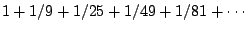

Next: Index
Up: Classical waveforms
Previous: Strategies for band-limiting sawtooth
Contents
Index
- A phasor~ object has a frequency of 441 Hertz (at a sample rate
of 44100). What is the amplitude of the DC component? The fundamental? The
partial at 22050 Hertz (above which the partials fold over)?
- A square wave oscillates between 1 and -1. What is its RMS amplitude?
- In Section 10.3 a square wave was presented as an odd
waveform whose Fourier series consisted of sine (and not cosine) functions.
If the square wave is advanced 1/8 cycle in phase, so that it appears as an
even function, what does its Fourier series become?
- A rectangle wave is 1 for 1/4 cycle, zero for 3/4 cycles. What are the
strengths of its harmonics at 0, 1, 2, 3, and 4 times the fundamental?
- How much is
?
Miller Puckette
2006-12-30